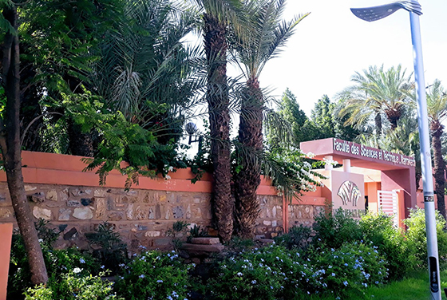
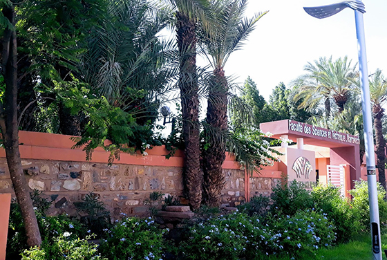

Créée en 1991 en tant que deuxième Faculté des Sciences de Marrakech, la FSTG s’est rapidement affirmée comme un acteur clé de la formation scientifique et technique au Maroc. En 1994, elle devient Faculté des Sciences et Techniques, s’inscrivant dans la politique nationale de renforcement de l’enseignement supérieur technologique.
Aujourd’hui, la FSTG fait partie d’un réseau national de huit établissements partageant la même vocation. Elle a pour mission de :
 
